Instrumental quirúrgico básico: guía completa
Guía completa sobre instrumental quirúrgico básico para estudiantes: porta agujas, pinzas, tijeras, bisturí, separadores, cuidado, errores frecuentes y práctica segura.
Leer artículo →Guías prácticas sobre sutura, hilos de sutura, instrumental médico, habilidades clínicas y entrenamiento para estudiantes de Medicina, Enfermería, Odontología y Veterinaria.
Una guía clara sobre los tipos de sutura más utilizados, sus diferencias, materiales necesarios y cómo comenzar a practicar de forma segura.
Leer artículoContenidos pensados para estudiantes que buscan comprender conceptos básicos, practicar mejor y elegir materiales adecuados para su formación clínica.
Guía completa sobre instrumental quirúrgico básico para estudiantes: porta agujas, pinzas, tijeras, bisturí, separadores, cuidado, errores frecuentes y práctica segura.
Leer artículo →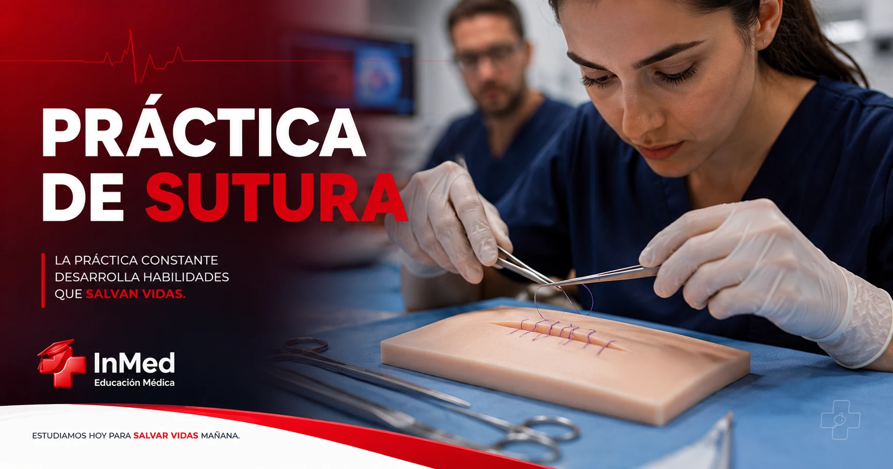
EntrenamientoGuía completa sobre práctica de sutura para estudiantes: materiales, técnicas básicas, plan de entrenamiento, errores frecuentes, seguridad y uso de kit de sutura.
Leer artículo →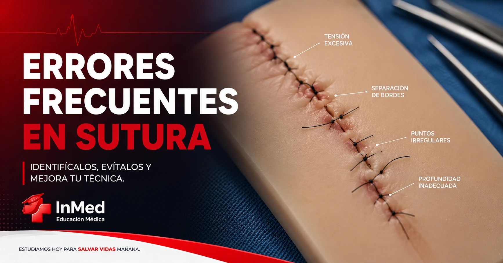
ErroresGuía completa sobre errores frecuentes al suturar: tensión excesiva, puntos asimétricos, nudos flojos, mala orientación de aguja, selección de material y práctica segura para estudiantes.
Leer artículo →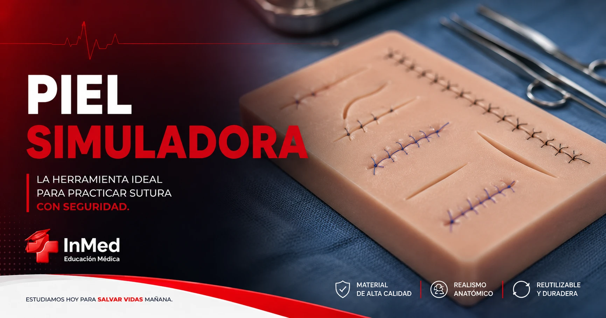
MaterialesGuía completa sobre piel simuladora para sutura: qué es, para qué sirve, tipos, cómo elegirla, cómo practicar, errores frecuentes, cuidado y entrenamiento seguro para estudiantes.
Leer artículo →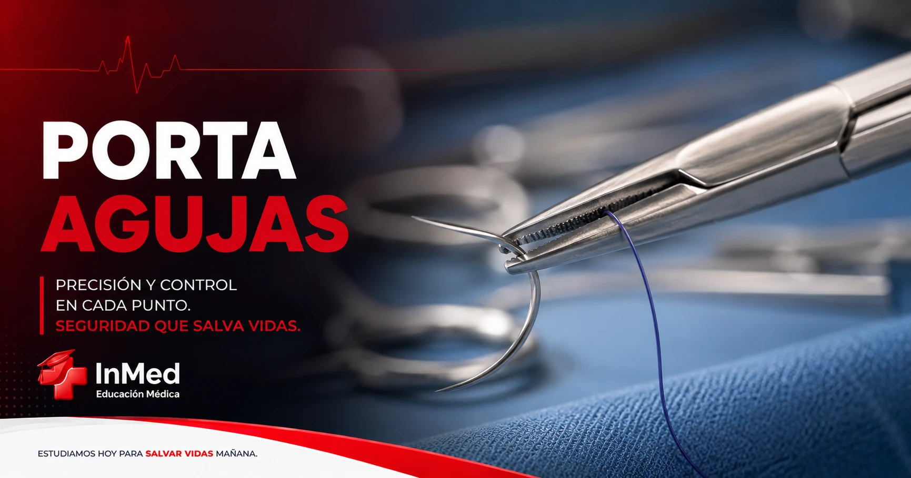
InstrumentalGuía completa sobre porta agujas para estudiantes: qué es, para qué sirve, tipos, partes, cómo usarlo, errores frecuentes, práctica segura y entrenamiento con kit de sutura.
Leer artículo →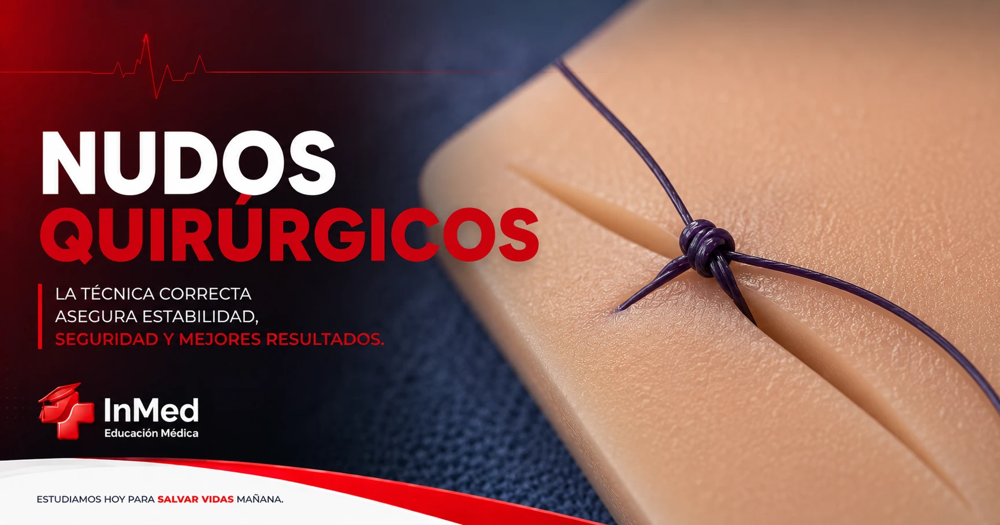
NudosGuía completa sobre nudos quirúrgicos para estudiantes: qué son, tipos, principios de seguridad, técnica, errores frecuentes, práctica en casa y entrenamiento con kit de sutura.
Leer artículo →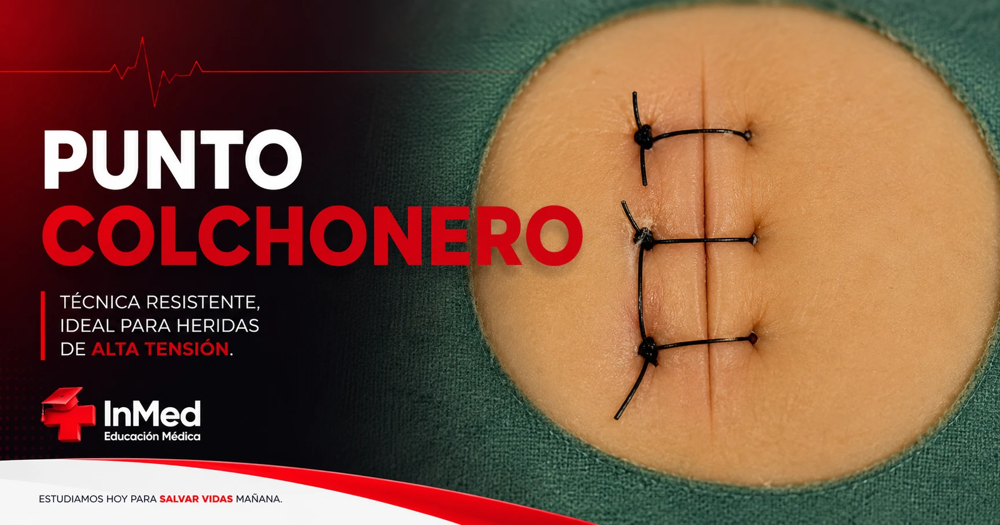
TécnicaGuía completa sobre punto colchonero horizontal y vertical: qué es, cuándo se utiliza, técnica paso a paso, errores frecuentes, materiales, práctica segura y consejos para estudiantes.
Leer artículo →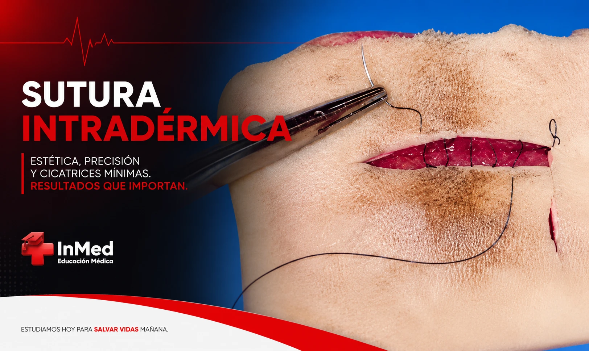
TécnicaGuía completa sobre sutura intradérmica o subcuticular: qué es, cuándo se utiliza, técnica, materiales, errores frecuentes, práctica segura y consejos para estudiantes.
Leer artículo →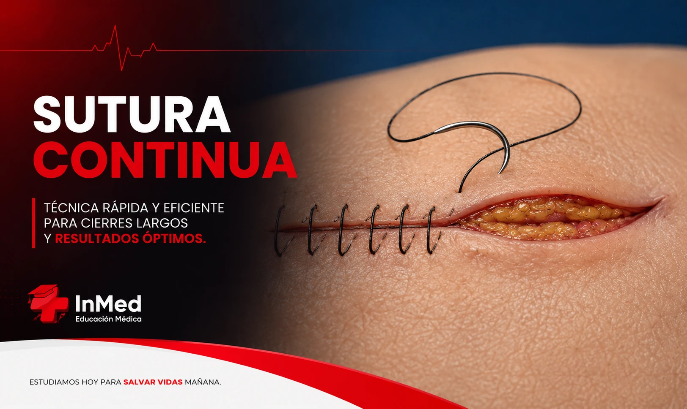
TécnicaGuía completa sobre sutura continua: qué es, cuándo se utiliza, técnica paso a paso, ventajas, limitaciones, errores frecuentes y práctica segura para estudiantes.
Leer artículo →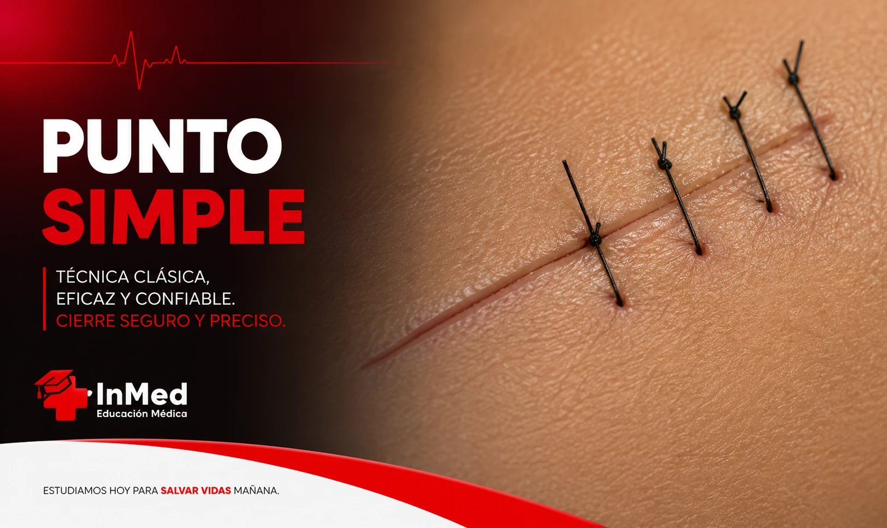
TécnicaGuía completa sobre punto simple de sutura: qué es, cuándo se utiliza, técnica paso a paso, errores frecuentes, práctica segura, nudos e instrumental para estudiantes.
Leer artículo → Kit
Kit
Guía completa sobre kit de sutura para medicina: qué incluye, cómo elegirlo, cómo practicar, errores frecuentes, seguridad, instrumental básico y entrenamiento para estudiantes.
Leer artículo →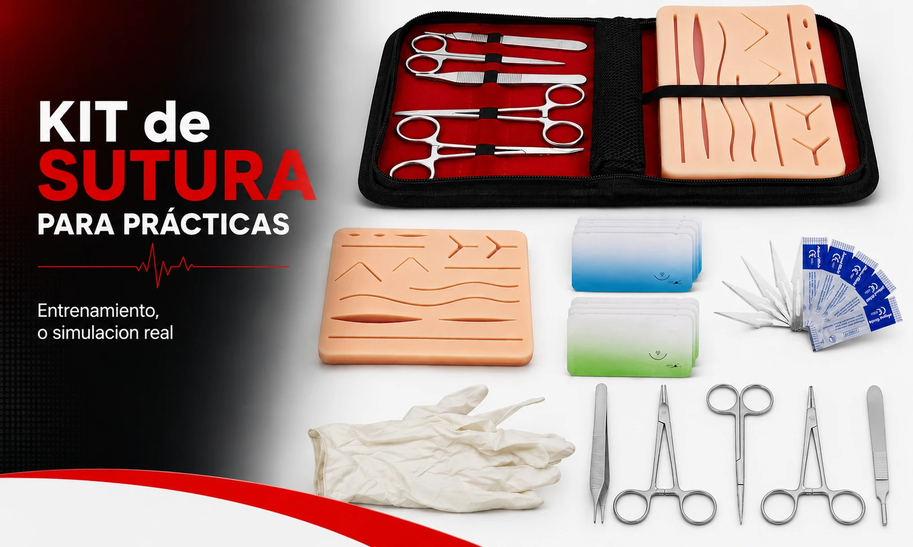
MaterialesGuía completa sobre materiales de sutura: suturas absorbibles, no absorbibles, monofilamento, multifilamento, calibres, selección por tejido y práctica para estudiantes.
Leer artículo →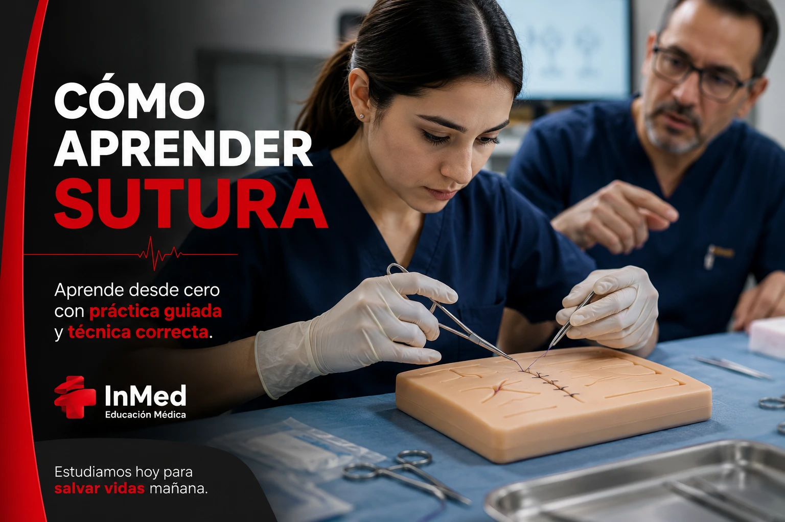
EntrenamientoGuía completa para aprender sutura desde cero: materiales, kit de sutura, primeros puntos, errores frecuentes, práctica segura, plan de entrenamiento y consejos para estudiantes.
Leer artículo →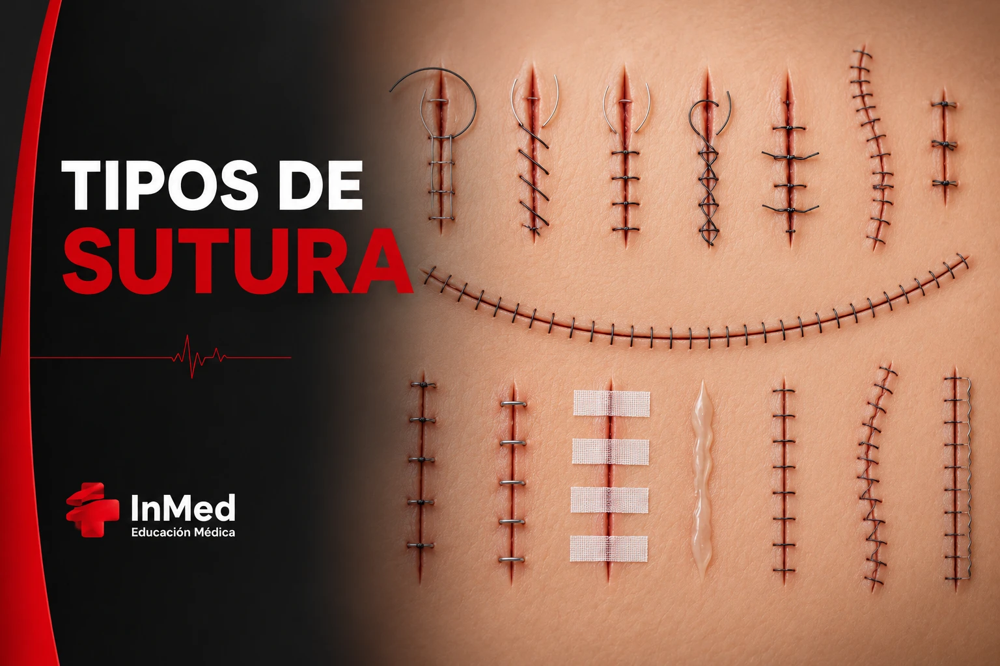
SuturaGuía completa sobre tipos de sutura para estudiantes de Medicina: punto simple, sutura continua, colchonero, intradérmica, hilos de sutura, materiales y errores frecuentes.
Leer artículo →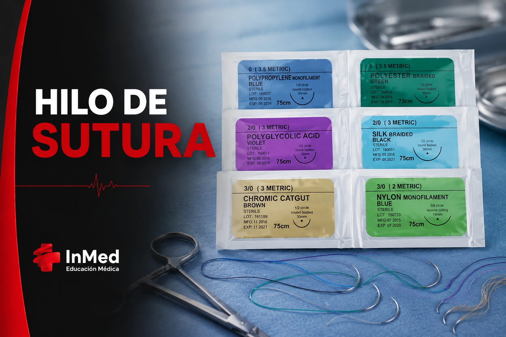
HilosGuía completa sobre hilo de sutura para estudiantes: qué es, tipos de hilos, absorbibles, no absorbibles, monofilamento, multifilamento, calibres y práctica.
Leer artículo →Conocé el Kit de Sutura InMed y desarrollá tus habilidades clínicas con materiales pensados para entrenamiento.
Reservar mi Kit